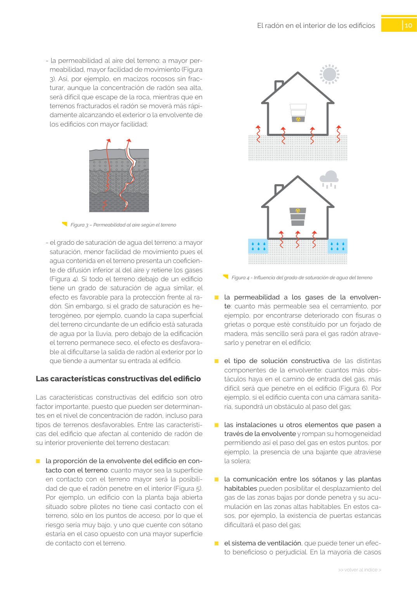

GUIA · Página 10 · versión sin-fecha
SHA256: 6765d0c34c51fbe193c3ed0c1378b710f98f086d16e2b68fc28ed36e143fdaea · página física 10 de 24 · métodos de encabezado
solo si están cotejados.
Formatos: Markdown · JSON de bloques · PDF p. 10 · imagen PNG
Página gráfica: el texto extraído puede ser parcial. Prevalece la imagen/PDF; depende de ellos.
10 >> volver al índice > El radón en el interior de los edificios Figura 4 - Influencia del grado de saturación de agua del terreno ■ la permeabilidad a los gases de la envolven te: cuanto más permeable sea el cerramiento, por ejemplo, por encontrarse deteriorado con fisuras o grietas o porque esté constituido por un forjado de madera, más sencillo será para el gas radón atrave sarlo y penetrar en el edificio; ■ el tipo de solución constructiva de las distintas componentes de la envolvente: cuantos más obs táculos haya en el camino de entrada del gas, más difícil será que penetre en el edificio (Figura 6). Por ejemplo, si el edificio cuenta con una cámara sanita ria, supondrá un obstáculo al paso del gas; ■ las instalaciones u otros elementos que pasen a través de la envolvente y rompan su homogeneidad permitiendo así el paso del gas en estos puntos, por ejemplo, la presencia de una bajante que atraviese la solera; ■ la comunicación entre los sótanos y las plantas habitables pueden posibilitar el desplazamiento del gas de las zonas bajas por donde penetra y su acu mulación en las zonas altas habitables. En estos ca sos, por ejemplo, la existencia de puertas estancas dificultará el paso del gas; ■ el sistema de ventilación, que puede tener un efec to beneficioso o perjudicial. En la mayoría de casos - la permeabilidad al aire del terreno: a mayor per meabilidad, mayor facilidad de movimiento (Figura 3). Así, por ejemplo, en macizos rocosos sin frac turar, aunque la concentración de radón sea alta, será difícil que escape de la roca, mientras que en terrenos fracturados el radón se moverá más rápi damente alcanzando el exterior o la envolvente de los edificios con mayor facilidad; Figura 3 – Permeabilidad al aire según el terreno - el grado de saturación de agua del terreno: a mayor saturación, menor facilidad de movimiento pues el agua contenida en el terreno presenta un coeficien te de difusión inferior al del aire y retiene los gases (Figura 4). Si todo el terreno debajo de un edificio tiene un grado de saturación de agua similar, el efecto es favorable para la protección frente al ra dón. Sin embargo, si el grado de saturación es he terogéneo, por ejemplo, cuando la capa superficial del terreno circundante de un edificio está saturada de agua por la lluvia, pero debajo de la edificación el terreno permanece seco, el efecto es desfavora ble al dificultarse la salida de radón al exterior por lo que tiende a aumentar su entrada al edificio. Las características constructivas del edificio Las características constructivas del edificio son otro factor importante, puesto que pueden ser determinan tes en el nivel de concentración de radón, incluso para tipos de terrenos desfavorables. Entre las característi cas del edificio que afectan al contenido de radón de su interior proveniente del terreno destacan: ■ la proporción de la envolvente del edificio en con tacto con el terreno: cuanto mayor sea la superficie en contacto con el terreno mayor será la posibili dad de que el radón penetre en el interior (Figura 5). Por ejemplo, un edificio con la planta baja abierta situado sobre pilotes no tiene casi contacto con el terreno, sólo en los puntos de acceso, por lo que el riesgo sería muy bajo, y uno que cuente con sótano estaría en el caso opuesto con una mayor superficie de contacto con el terreno.
